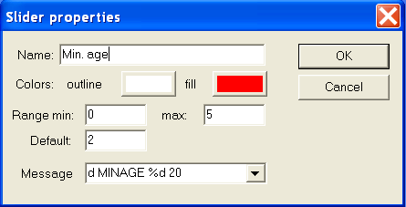

Editors with galleries
The surface, contour, function, and
panel editors share a user interface paradigm:
the gallery. At the top left of the editor window is the
preview; to its right are all of the controls
for altering it. Below the preview and controls is the gallery. This
is a window which shows all of the surfaces, contours, functions, or
panels (respectively) which are part of the object.
Working with the gallery
The gallery lets you see all of the components of a particular
type which are part of the object. Clicking on one will bring it
up in the preview window, where it can be altered with the editing
controls. Right-clicking on the preview window brings up a popup
menu which includes the commands:
- saves whatever changes have been made
to this component to the version in the gallery. Note that the changes
are also saved to the gallery when you choose another component to
edit.
- abandons any changes
you have made to the current component since it was last saved to
the gallery; it brings the version currently in the gallery into the
preview window.
- saves the current component as a
new component added to the end of the gallery.
Each component has a name; a new component's name is
"unnamed".
Right-clicking in the gallery brings up the gallery popup menu,
which includes the commands:
- creates a new component, named "unnamed",
at the end of the gallery.
- deletes the currently selected
component. If there is only one entry in the gallery, the command replaces :
it resets the single component to its default state (as if newly
created).
- , , and perform basic clipboard operations on the
gallery. has two sub-options, , which inserts the copied or cut component to
the left of the currently selected object, and , which inserts it to the right. Note that if
you the only component in the gallery, it
will be reset to the default state instead of deleted.
You can also move a gallery entry by selecting it, then dragging
it to a new position.
Component sets
Each panel in the gallery is saved to a file name.pnl
on the lab table, where name is the name given to the
panel. Panels called "unnamed", however, are not saved.
This is also the default behaviour for surfaces (which are saved
as name.s) and contours (name.con). However,
surfaces, contours, and functions can be bound into
sets, which are saved as single files.
The gallery popup menu of the surface, contour, and function
editors has an extra command. toggles the
state of the components: if on, they are bound to a set; if off, they
will be saved as individual files. Note that if the components have
been saved as individual files, then are bound, the individual files
will not be deleted; similarly, if they are unbound, the set will not
be deleted.
Surfaces
Surfaces in L-studio are implemented as Bezier patches. There are
two surface editors available: the basic surface editor,
and the advanced editor. With the basic editor,
you can edit and manipulate surfaces with a single Bezier patch.
Surfaces made from more than one Bezier patch must be edited
using the advanced editor. To switch between the basic and advanced
editors, press the Advanced or Basic button in the top right corner of the
editor.
For more information about surfaces in cpfg, see the
Cpfg User's Manual. More information can also be
found at http://www.cpsc.ucalgary.ca/Research/bmv/vlab/ise.html.
The basic surface editor
The editor window
In the top left of the editor is the preview window, which shows
the current state of the surface currently being edited. To the right
of the preview window are the controls: the Advanced button switches to the advanced surface editor; below it is an
array of buttons to select which Bezier patch control point is
currently being edited; and below that is the name of the current
surface. Under the preview window and controls are three sliders which
display (and can be used to set) the X, Y, and Z position of the
currently selected control point. At the bottom of the editor is the
gallery of surfaces. If a gallery entry is in white, it was created
with the advanced editor, and cannot be loaded into the basic editor;
attempting to select such an entry will merely display a message in
the preview window indicating this.
Manipulating the view
The preview window can be in one of two modes:
The default mode is Rotate. To enter Lock XY mode, right-click on the preview window and
select from the popup menu. To
return to Rotate mode, select again.
In Rotate mode, you can rotate the view of
the surface by dragging on the preview window with the mouse. To
reset the display to its default parallel projection, right-click on
the preview window and select
from the popup menu. In Lock XY mode, the
surface cannot be rotated: it is presented in parallel projection on
the X–Y plane.
You can pan and zoom the preview window. In both modes, pan by
dragging the mouse while holding the Shift key on the keyboard. To
zoom in or out, either drag with the middle mouse button, or drag with
the left mouse button while holding the Ctrl key on the
keyboard. Dragging the mouse up zooms in, while dragging down zooms
out.
Display options
You can choose to display or not display the control mesh, the
control points, or the control points' numbers. You can also show the
surface in one of three densities of wireframe, or as a shaded
surface. These options are chosen through the submenu of the preview window's popup menu.
Modifying the surface
The surface can be edited in both modes. In Rotate mode, select a control point using the
buttons labeled 1–16. The three sliders located below the
preview window can be used to change the X, Y and Z coordinates of the
selected point. In Lock XY mode, a control point
can be edited directly by clicking to selct it, then dragging it.
(Note that in Lock XY mode, you can only drag a
control point within the X–Y plane; to change its Z coordinate,
select it and use the Z slider.)
You can also change the contact point associated
with the surface. When cpfg/lpfg draws the surface,
the turtle position corresponds to the contact point. See the
Cpfg User's Manual for more information.
If you choose the command from
the popup menu, any change you make to a control point's position will
be mirrored in point opposite it in the plane defined by the Heading
and Up vectors. The result of applying to a surface which is not symmetric to start with is
undefined.
The advanced surface editor
Again, the preview window is at the top left, the controls are to
its right, and the gallery is at the bottom. The Basic button, at the top left, switches back to the
basic surface editor. The button panel
below it offers many controls for editing the surface:
- Init B-spline clears the current
surface and creates a new B-spline curve.
- Init Bz-Surface clears
the current surface and creates a new surface.
- Open opens a dialog box which lets you chose a
file to open as the current surface.
- Save lets you save the current surface to a
file.
- Init view resets the view in the
preview window. The view is set to look down on the X–Y plane,
and the pan and scaling is set so that the entire surface can be
seen.
 Fit view adjusts pan and scaling so
that the entire surface can be seen in the preview window.
Fit view adjusts pan and scaling so
that the entire surface can be seen in the preview window.- Undo undoes the last change you made to the
surface. You can undo more than once.
- Redo redoes an operation you just undid with Undo.
-
Select switches the editor into Select mode. In this mode, you can select control
points by left-clicking them. A selected control point offers three
handles: dragging the red handle moves the point in the X dimension,
dragging the green handle moves the point in the Y dimension, and
dragging the blue handle moves the point in the Z dimension. While in
Select mode, dragging the mouse while holding
Alt rotates the view.
-
Rotate switches the editor into Rotate mode. In this mode, you can drag the mouse on
the preview window to rotate the view of the surface.
- Zoom switches the editor into Zoom mode. In this mode, dragging the mouse up in
the preview window zooms in on the surface, while dragging down zooms
out.
- Translate switches the editor
into Translate mode. In this mode, you can pan
the view of the surface by dragging the mouse in the preview
window.
- Axes toggles the display of the Cartesian axes.
The red arrow points along the positive X axis, the green arrow points
along the positive Y axis, and the blue arrow points along the
positive Z axis.
- Grid opens a submenu which lets you choose which
grids you want to display. You can independently turn on or off the
X–Y grid, the Y–Z grid, and the X–Z grid. Choosing
from the submenu toggles all active grids
on or off.
-
Insert brings up a submenu offering three
options:
- inserts a control point. Within the
submenu,
inserts a point before the currently selected control point, while
inserts a control point after the
currently selected one.
- inserts a Bezier patch. Pick an
option from the submenu to choose the relation of the new patch to the
patch containing the currently selected control point.
- inserts a variation.
If no control point is selected, the commands have no effect.
 Delete brings up a submenu with three options:
Delete brings up a submenu with three options:
- deletes the currently selected control
point.
- deletes the Bezier patch containing
the currently selected control point.
- deletes the variation containing
the currently selected control point.
If no control point is selected, the commands have no effect.
- Multiplicity opens a
submenu from which you can choose the multiplicity of the currently
selected control point.
-
Type brings up a submenu which lets you
change the type of the curve containing the currently selected
control vertex. You can change it to a bezier patch, or any
of several types of B-spline.
-
Select opens a submenu which lets you select
every control point, including control points of variations; all
control points on the currently selected curve or surface; or a single
one of the currently selected control points. This last option is
useful if there are several control points close together, and
distinguishing them graphically is difficult.
-
Align moves all currently selected control
points to the position of the active control point — that is,
the control point currently displaying directional arrows.
 Display Points toggles whether
control points are displayed in the preview window.
Display Points toggles whether
control points are displayed in the preview window.- Display Polygon toggles whether
control polygons are displayed in the preview window.
- Display Curve toggles whether curves
and surfaces are displayed in the preview window.
 Divide subdivides the curve or surface which
contains the currently selected point.
Divide subdivides the curve or surface which
contains the currently selected point.-
Show selects which portions of the surface
to show on the display. It opens a submenu from which you can choose
, to show the entire surface and all of
its components;
, to show only the currently selected
curve or surface;
, to show only the currently selected patch
of curve or surface;
and , to show only the currently selected
control points.
-
Hide brings up a submenu which lets you
hide the current surface, the currently selected patch, or the
currently selected control points. Hidden components cannot be
selected with the mouse.
-
Brighten opens a submenu which lets you
brighten the entire surface and all of its components, or just the
currently selected surface, patch, or control point.
-
Darken brings up a submenu which lets you
darken the current surface, the currently selected patch, or the
currently selected control points. Darkened components can still be
selected with the mouse.
-
Turtle opens a dialog box in which you
can specify the surface's contact point, end point, heading vector,
up vector, and initial size. These parameters are described in
the Cpfg User's Manual.
-
Transform opens a dialog
box in which you can specify various transformations to directly apply
to the currently selected control points.
To rotate an angle α about a vector v, enter α
in degrees in the Alpha box, and the
components of v as Vector, then press
the Rot button. To scale from the origin,
enter the scaling factors along the X, Y, and Z axes as Scale, then press the Scale button. To translate, enter the X, Y, and Z
offsets as Trans, then press the Trans button. Finally, you can directly set the
coordinates; enter them in the Set fields,
then press the Set button.
Contours
Contours in L-studio are defined by B-spline curves. The contour
editor lets you manipulate the curve's control points; you can
add or delete control points, move them, or change their
multiplicity (strength of attraction). You can also select
between several types of B-spline curve.
Selecting the type of curve
L-studio lets you create contours which are closed or
open; to switch between them, check or uncheck the Closed contour check box, in the top right corner
of the editor. In addition, you can force the B-spline to pass through
the first and last control points by selecting Endpoint interp. in the B-spline type group; the normal, non-interpolating
behaviour is selected with the Regular button.
Manipulating control points
Points can be manipulated in one of four edit modes.
The current edit mode is selected using the buttons at the top
right. The available modes are move points, add points, delete
points, and set coordinates.
- In add points mode, click anywhere to add a
new point. The point will be inserted into the closest segment of the
control polygon.
- In delete points mode, click on a point to
delete it. You cannot delete a point if doing so would reduce the
number of points below four; a point of multiplicity two counts as two
points, and a point of multiplicity three counts as three
points.
- In move points mode, you can drag a control
point to a new position. In this mode, you can also change a point's
multiplicity by double clicking it. Points with multiplicity one are
white, green indicates a multiplicity of two, and red indicates a
multiplicity of three. You cannot lower a point's multiplicity if
doing so would reduce the number of points below four; see the
previous point.
- Finally, in set coordinates mode, clicking
on a control point lets you explicitly set its X and Y coordinates.
Manipulating the view
- To pan the view, drag in the view window while holding Shift.
- To zoom in or out, drag in the view window while holding Ctrl, or
drag while pressing the middle mouse button. Dragging up zooms in,
while dragging down zooms out.
You can toggle the display of the control points, the control
polygon, the edited curve, the coordinate system axes, the grid and
the labels on the grid using buttons grouped in the Display section.
Functions
The function editor is very similar to the contour editor. The
objects being edited are also cubic spline contours, but have some
additional constraints:
- The X-coordinate of the first point is equal to 0 (zero);
- The X-coordinate of the last point is equal to 1; and
- For any two consecutive points pi and
pi+1 on the curve,
Xpi ≤ Xpi+1.
These conditions assure that the curve can be interpreted as a
function of X.
Manipulating control points
Points can be manipulated in one of four edit modes.
The current edit mode is selected using the buttons at the top
right. The available modes are move points, add points, delete
points, and set coordinates.
- In add points mode, click anywhere to add a
new point. The point will be inserted into the closest segment of the
control polygon.
- In delete points mode, click on a point to
delete it. You cannot delete a point if doing so would reduce the
number of points below four.
In move points mode, you can drag a
control point to a new position. The X coordinate of the point will
always be held between the X coordinates of its neighbours.
Finally, in set coordinates mode, clicking
on a control point lets you explicitly set its X and Y coordinates.
The Y coordinate can be set to any value, but the X coordinate must
be between the X coordinates of the neighbouring points.
Manipulating the view
- To pan the view, drag in the view window while holding Shift.
- To zoom in or out, drag in the view window while holding Ctrl, or
drag while pressing the middle mouse button. Dragging up zooms in,
while dragging down zooms out.
You can toggle the display of the control points, the control
polygon, the edited function, the coordinate system axes, the grid and
the labels on the grid using buttons grouped in the Display section.
Flip view
The functions can be displayed in two ways. Traditionally, the
domain (X) of the function y=f(x) is associated with the horizontal
axis, while the range (Y) is associated with the vertical axis. In
some cases, it is convenient to assume that X is the vertical axis and
Y is the horizontal axis. To do this you can check the Flip view check box. Flip view is a
property of a function, so it is possible to have only some of
the functions flipped. This property is saved together with a function
only if the gallery of functions is bound into a function set.
Samples
This is the number of samples to be precomputed by
cpfg/lpfg for a function. For more information, refer to
the section Function galleries in What's new in cpfg.
Panels
Panels are used to control parameters during experiments. An
extensive description of panels can be found in
the vlab panels documentation.
The description provided here focuses on the user's perspective of the
panels editor, as well as on the differences between vlab and
L-studio implementations.
Working mode
The current working mode is determined by the buttons Execute and Design. In
Execute mode, the user can interactively change
the displayed values; these changes are immediately applied to the
relevant files on the lab table. In Design mode,
the panels themselves can be modified, and the commands along the
right side of the editor are accessible.
Edit mode
- Select mode is the default. In this mode you
can select widgets by clicking on them. You can also click and drag a
box to select one or more widgets. A selected widget or widgets can be
moved by dragging it. If you double click on an widget in Select mode, the widget
properties dialog box pops up. From this dialog box, you can
change widget-specific attributes.
- Delete. When this button is pressed, all
currently selected widgets are deleted. After deletion, the mode
switches back to Select.
- Create slider mode. While in this mode,
clicking on the panel editor window will place a new slider.
- Create button mode. While in this mode,
clicking on the panel editor window will place a new button.
- Create group mode. While in this mode,
dragging a box around one or more buttons will associate them in a
group. (In Execute mode, only one button in a
group will be active at a time.) Widgets that are not buttons will not
be associated in the group.
- Create label mode. While in this mode,
clicking on the panel editor window will create a new label, whose
text defaults to "Label".
Modify buttons
- Align Horizontally. Clicking this button
presents you with three options: align to left, align to
right, and center horizontally. Align to left
moves all of the currently selected widgets to the left so that their
left edges are at the same horizontal position. Align to
right moves all of the currently selected widgets to the right so
that their right edges are at the same horizontal position. Center
horizontally moves all of the currently selected widgets
horizontally so that they are centered on the same horizontal
position.
- Align Vertically. Clicking this button
presents you with three options: align to top, align to
bottom, and center vertically. Align to top
moves all of the currently selected widgets up so that their top edges
are at the same vertical position. Align to bottom moves all
of the currently selected widgets down so that their bottom edges are
at the same vertical position. Center Vertically moves all of
the currently selected widgets up or down so that they are centered on
the same vertical position.
- Distribute Vertically. Pushing this button
moves the selected widgets so that they are evenly spaced
vertically. The topmost and bottommost widgets do not move.
- Distribute Horizontally. Pushing this
button moves the selected widgets so that they are evenly spaced
horizontally. The leftmost and rightmost widgets do not move.
- Duplicate Down. When this button is
pressed, duplicates of all of the currently selected widgets will be
created immediately below the current selection. The duplicated
widgets are identical to the originals, except that their names will
be changed to "Copy of" the original name. If a group is selected, its
buttons will be duplicated, but the group will not.

- Duplicate Right. When this button is
pressed, duplicates of all of the currently selected widgets will be
created immediately to the right of the current selection. The
duplicated widgets are identical to the originals, except that their
names will be changed to "Copy of" the original name. If a group is
selected, its buttons will be duplicated, but the group will not.
File association
The Associate with area lets you choose
which file is modified by the current panel: the L-system file, the
View file, or another file (whose filename is typed in the text
box).
Widget properties
To modify the properties of an widget, double-click on the
widget. This will open the widget's Properties dialog
box. Each type of widget has its own dialog box:

The Slider Properties dialog lets the user change the
properties of slider widgets:
- the name (the label of the slider),
- outline and fill colors,
- minimum, maximum and default values, and
- the message. For a detailed description of
the messages used in panels refer to the
vlab panels documentation.
The Button Properties dialog lets the user change the
properties of button widgets:
- the name (the button label),
- outline and fill colors,
- the default state (On, Off, or Monostable),
and
- the message.
The Label Properties dialog lets the user change the
properties of text labels: